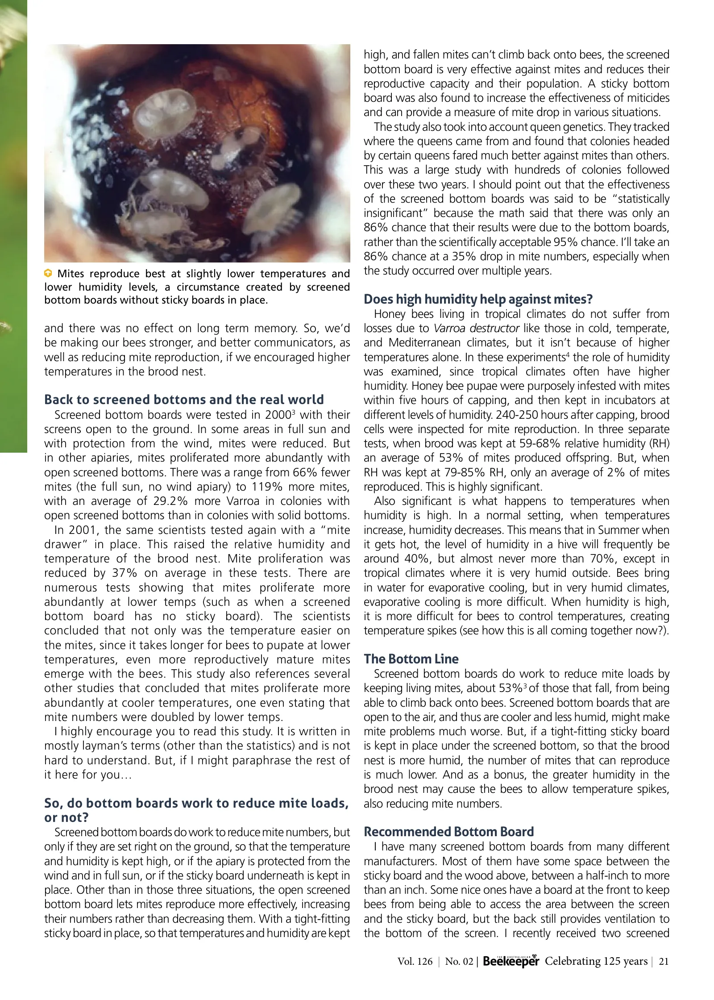

Mites reproduce best at slightly lower temperatures and
lower humidity levels, a circumstance created by screened
bottom boards without sticky boards in place.
high, and fallen mites can’t climb back onto bees, the screened
bottom board is very effective against mites and reduces their
reproductive capacity and their population. A sticky bottom
board was also found to increase the effectiveness of miticides
and can provide a measure of mite drop in various situations.
The study also took into account queen genetics. They tracked
where the queens came from and found that colonies headed
by certain queens fared much better against mites than others.
This was a large study with hundreds of colonies followed
over these two years. I should point out that the effectiveness
of the screened bottom boards was said to be “statistically
insignificant” because the math said that there was only an
86% chance that their results were due to the bottom boards,
rather than the scientifically acceptable 95% chance. I’ll take an
86% chance at a 35% drop in mite numbers, especially when
the study occurred over multiple years.
Does high humidity help against mites?
Honey bees living in tropical climates do not suffer from
losses due to Varroa destructor like those in cold, temperate,
and Mediterranean climates, but it isn’t because of higher
temperatures alone. In these experiments4 the role of humidity
was examined, since tropical climates often have higher
humidity. Honey bee pupae were purposely infested with mites
within five hours of capping, and then kept in incubators at
different levels of humidity. 240-250 hours after capping, brood
cells were inspected for mite reproduction. In three separate
tests, when brood was kept at 59-68% relative humidity (RH)
an average of 53% of mites produced offspring. But, when
RH was kept at 79-85% RH, only an average of 2% of mites
reproduced. This is highly significant.
Also significant is what happens to temperatures when
humidity is high. In a normal setting, when temperatures
increase, humidity decreases. This means that in Summer when
it gets hot, the level of humidity in a hive will frequently be
around 40%, but almost never more than 70%, except in
tropical climates where it is very humid outside. Bees bring
in water for evaporative cooling, but in very humid climates,
evaporative cooling is more difficult. When humidity is high,
it is more difficult for bees to control temperatures, creating
temperature spikes (see how this is all coming together now?).
The Bottom Line
Screened bottom boards do work to reduce mite loads by
keeping living mites, about 53%3 of those that fall, from being
able to climb back onto bees. Screened bottom boards that are
open to the air, and thus are cooler and less humid, might make
mite problems much worse. But, if a tight-fitting sticky board
is kept in place under the screened bottom, so that the brood
nest is more humid, the number of mites that can reproduce
is much lower. And as a bonus, the greater humidity in the
brood nest may cause the bees to allow temperature spikes,
also reducing mite numbers.
Recommended Bottom Board
I have many screened bottom boards from many different
manufacturers. Most of them have some space between the
sticky board and the wood above, between a half-inch to more
than an inch. Some nice ones have a board at the front to keep
bees from being able to access the area between the screen
and the sticky board, but the back still provides ventilation to
the bottom of the screen. I recently received two screened
and there was no effect on long term memory. So, we’d
be making our bees stronger, and better communicators, as
well as reducing mite reproduction, if we encouraged higher
temperatures in the brood nest.
Back to screened bottoms and the real world
Screened bottom boards were tested in 20003 with their
screens open to the ground. In some areas in full sun and
with protection from the wind, mites were reduced. But
in other apiaries, mites proliferated more abundantly with
open screened bottoms. There was a range from 66% fewer
mites (the full sun, no wind apiary) to 119% more mites,
with an average of 29.2% more Varroa in colonies with
open screened bottoms than in colonies with solid bottoms.
In 2001, the same scientists tested again with a “mite
drawer” in place. This raised the relative humidity and
temperature of the brood nest. Mite proliferation was
reduced by 37% on average in these tests. There are
numerous tests showing that mites proliferate more
abundantly at lower temps (such as when a screened
bottom board has no sticky board). The scientists
concluded that not only was the temperature easier on
the mites, since it takes longer for bees to pupate at lower
temperatures, even more reproductively mature mites
emerge with the bees. This study also references several
other studies that concluded that mites proliferate more
abundantly at cooler temperatures, one even stating that
mite numbers were doubled by lower temps.
I highly encourage you to read this study. It is written in
mostly layman’s terms (other than the statistics) and is not
hard to understand. But, if I might paraphrase the rest of
it here for you…
So, do bottom boards work to reduce mite loads,
or not?
Screened bottom boards do work to reduce mite numbers, but
only if they are set right on the ground, so that the temperature
and humidity is kept high, or if the apiary is protected from the
wind and in full sun, or if the sticky board underneath is kept in
place. Other than in those three situations, the open screened
bottom board lets mites reproduce more effectively, increasing
their numbers rather than decreasing them. With a tight-fitting
sticky board in place, so that temperatures and humidity are kept
Vol. 126 | No. 02 |
Celebrating 125 years | 21